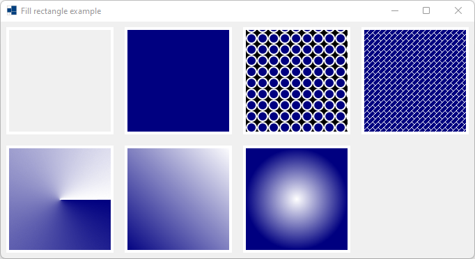
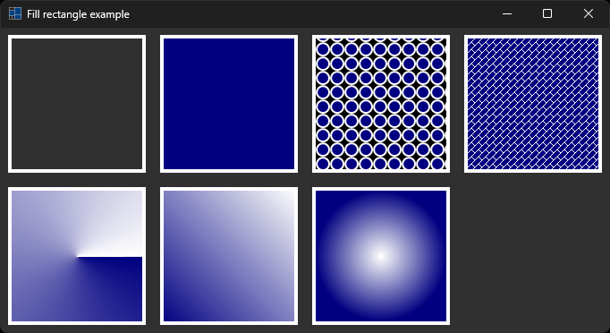
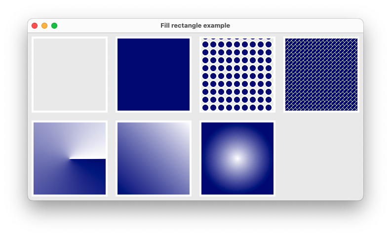
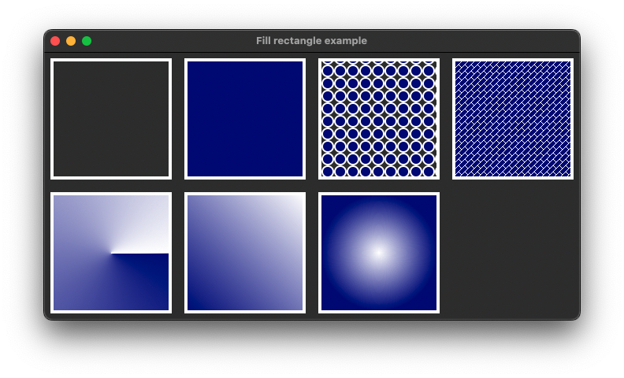
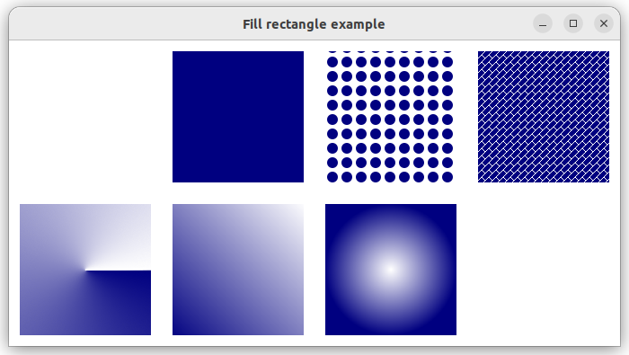
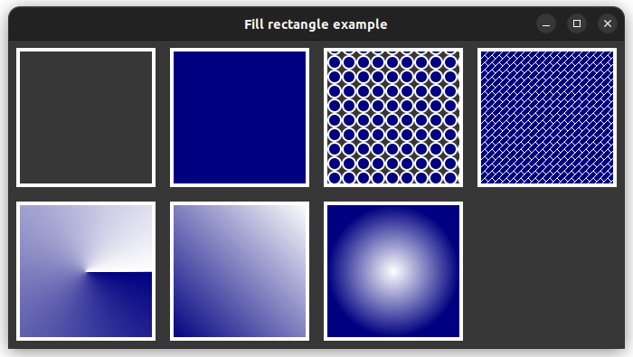

|
xtd
0.2.0
|
fill_rectangle.cpp
shows how to fill rectangle in paint event using xtd::drawing::graphics::fill_rectangle.
- Windows
- 

- macOS
- 

- Gnome
- 

#include <xtd/drawing/drawing_2d/conical_gradient_brush>
#include <xtd/drawing/drawing_2d/hatch_brush>
#include <xtd/drawing/drawing_2d/linear_gradient_brush>
#include <xtd/drawing/drawing_2d/radial_gradient_brush>
#include <xtd/drawing/solid_brush>
#include <xtd/drawing/texture_brush>
#include <xtd/forms/application>
#include <xtd/forms/form>
using namespace xtd;
using namespace xtd::drawing;
using namespace xtd::drawing::drawing_2d;
using namespace xtd::forms;
namespace fill_rectangle_example {
public:
form1() {
text("Fill rectangle example");
client_size({680, 340});
}
protected:
form::on_paint(e);
e.graphics().draw_rectangle(pen {fore_color, 4}, rectangle {10, 10, 150, 150});
e.graphics().fill_rectangle(solid_brush {back_color}, rectangle {180, 10, 150, 150});
e.graphics().draw_rectangle(pen {fore_color, 4}, rectangle {180, 10, 150, 150});
e.graphics().fill_rectangle(texture_brush {create_circle_texture(fore_color, back_color)}, rectangle {350, 10, 150, 150});
e.graphics().draw_rectangle(pen {fore_color, 4}, rectangle {350, 10, 150, 150});
e.graphics().fill_rectangle(hatch_brush {hatch_style::diagonal_brick, color::white, back_color}, rectangle {520, 10, 150, 150});
e.graphics().draw_rectangle(pen {color::white, 4}, rectangle {520, 10, 150, 150});
e.graphics().fill_rectangle(conical_gradient_brush {point {85, 255}, back_color, fore_color, 0}, rectangle {10, 180, 150, 150});
e.graphics().draw_rectangle(pen {color::white, 4}, rectangle {10, 180, 150, 150});
e.graphics().fill_rectangle(linear_gradient_brush {rectangle {180, 180, 150, 150}, back_color, fore_color, 315}, rectangle {180, 180, 150, 150});
e.graphics().draw_rectangle(pen {color::white, 4}, rectangle {180, 180, 150, 150});
e.graphics().fill_rectangle(radial_gradient_brush {point {425, 255}, fore_color, back_color, 73}, rectangle {350, 180, 150, 150});
e.graphics().draw_rectangle(pen {color::white, 4}, rectangle {350, 180, 150, 150});
}
private:
auto create_circle_texture(const color& fore_color, const color& back_color)->image {
auto texture = bitmap {16, 16};
auto graphics = texture.create_graphics();
graphics.fill_ellipse(solid_brush {back_color}, 1, 1, texture.width() - 2, texture.height() - 2);
graphics.draw_ellipse(pen {fore_color, 2}, 1, 1, texture.width() - 2, texture.height() - 2);
return texture;
}
};
}
auto main()->int {
application::run(fill_rectangle_example::form1 {});
}
static const xtd::drawing::color transparent
Gets a system-defined color that has an ARGB value of 0x00FFFFFF. This field is constant.
Definition: color.h:55
static const xtd::drawing::color white
Gets a system-defined color that has an ARGB value of 0xFFFFFFFF. This field is constant.
Definition: color.h:469
static const xtd::drawing::color navy
Gets a system-defined color that has an ARGB value of 0xFF000080. This field is constant.
Definition: color.h:343
xtd::forms::style_sheets::control form
The form data allows you to specify the box of a form control.
Definition: form.h:21
@ point
Specifies a printer's point (1/72 inch) as the unit of measure.
@ diagonal_brick
Specifies a hatch that has the appearance of layered bricks that slant to the left from top points to...
@ text
The xtd::forms::status_bar_panel displays text in the standard font.
The xtd::drawing::drawing_2d/ namespace provides advanced two-dimensional and vector graphics functio...
Definition: compositing_mode.h:13
The xtd::drawing namespace provides access to GDI+ basic graphics functionality. More advanced functi...
Definition: actions_system_images.h:11
The xtd::forms namespace contains classes for creating Windows-based applications that take full adva...
Definition: about_box.h:13
The xtd namespace contains all fundamental classes to access Hardware, Os, System,...
Definition: system_report.h:17
Generated on Sun Oct 1 2023 07:46:00 for xtd by Gammasoft. All rights reserved.